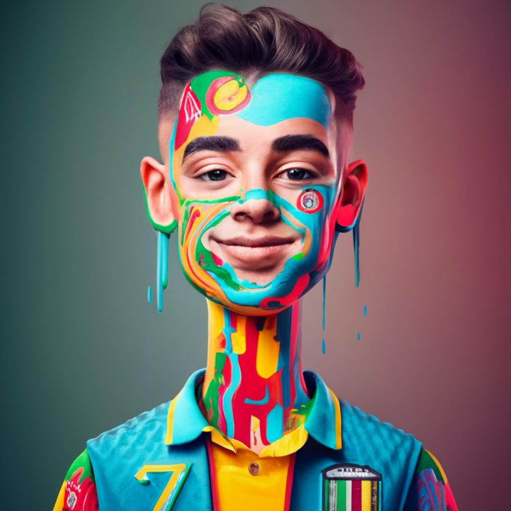
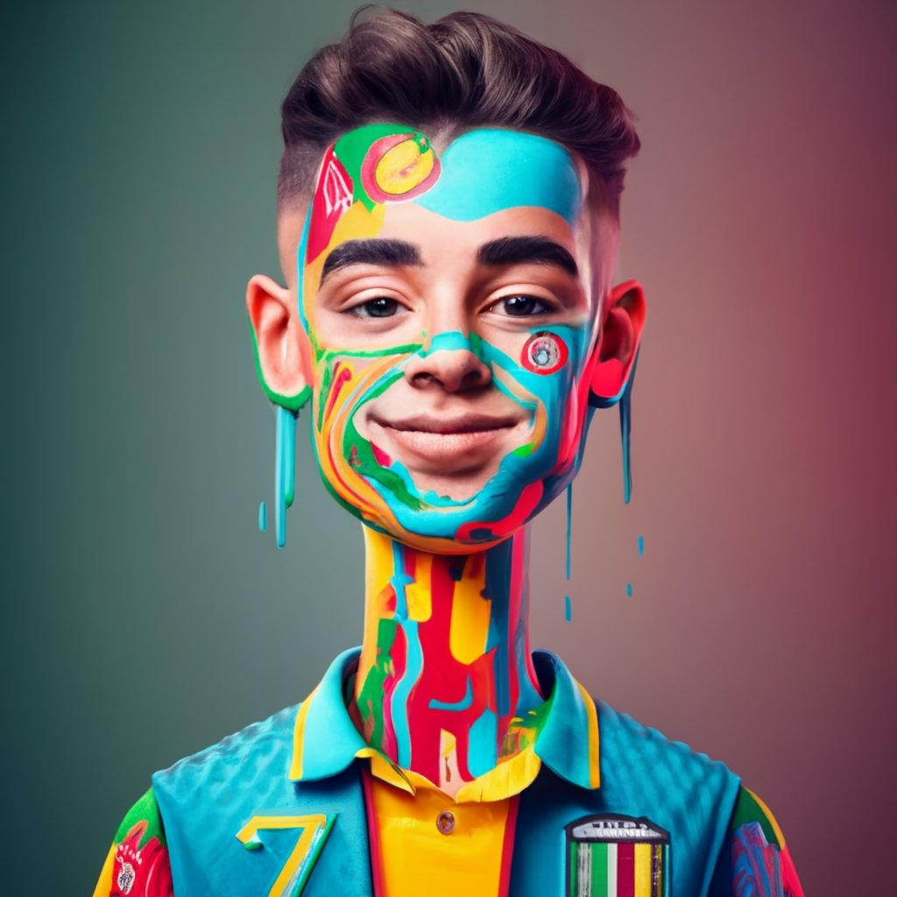

Natación en directo es una página web que ofrece información y entretenimiento sobre natación.
En nuestra página web, puedes encontrar los siguientes servicios:
Nuestro objetivo es ofrecer a los aficionados a la natación una forma fácil y cómoda de mantenerse informados sobre el mundo de la natación.
Natación en directo es una página web que fue creada por un grupo de cinco estudiantes aficionados a la natación.

La idea de crear la página web surgió en un aula de clase de informática. Los estudiantes, Galder, Telmo, Iker Soto, Carmelo y Xabi, querían encontrar una forma de compartir su pasión por la natación con otros aficionados.
Los estudiantes trabajaron duro para desarrollar la página web. Recopilaron información sobre competiciones, resultados y noticias del mundo de la natación. También crearon una sección de vídeos para que los usuarios pudieran ver las competiciones en directo.
La página web fue un éxito inmediato. Los aficionados a la natación de todo el mundo comenzaron a utilizarla para mantenerse informados sobre el mundo de la natación.
Los estudiantes están orgullosos de haber creado una página web que ha ayudado a los aficionados a la natación de todo el mundo a disfrutar de este deporte.
El equipo de Natación en directo está formado por:
.jpg) 
